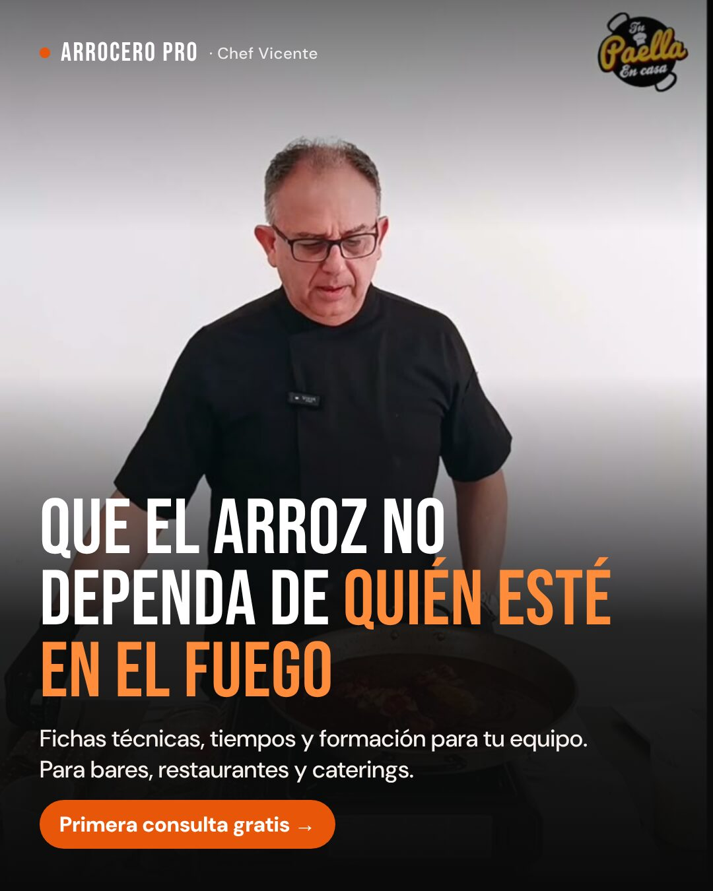
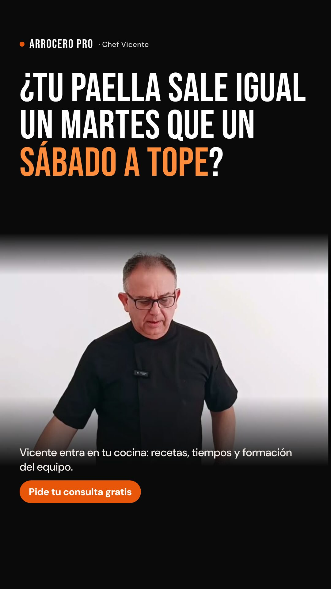
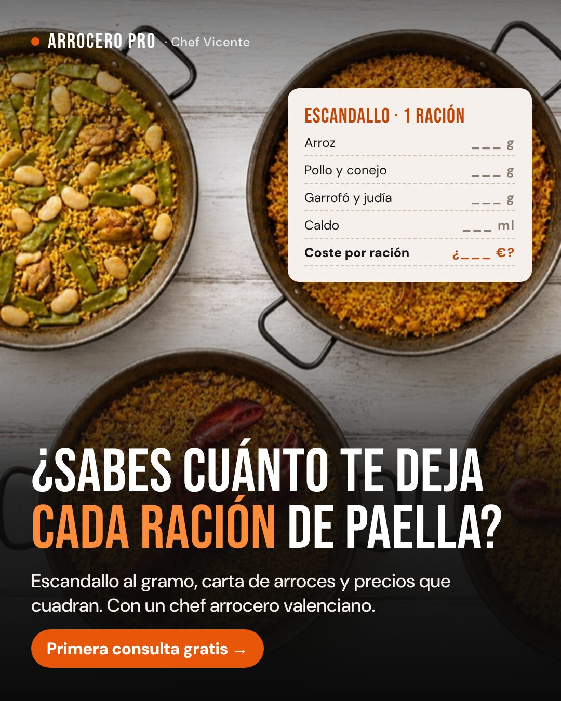
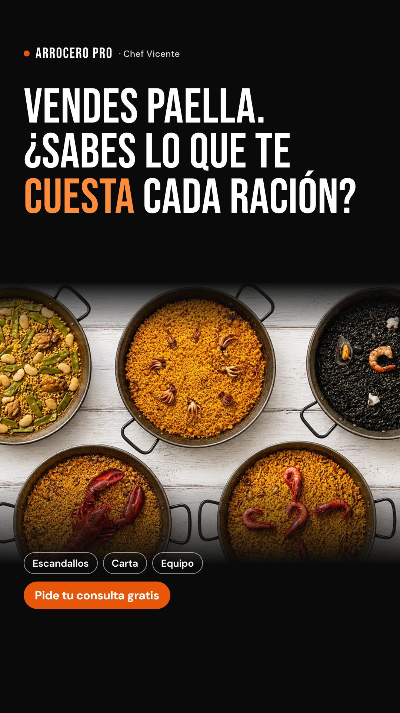
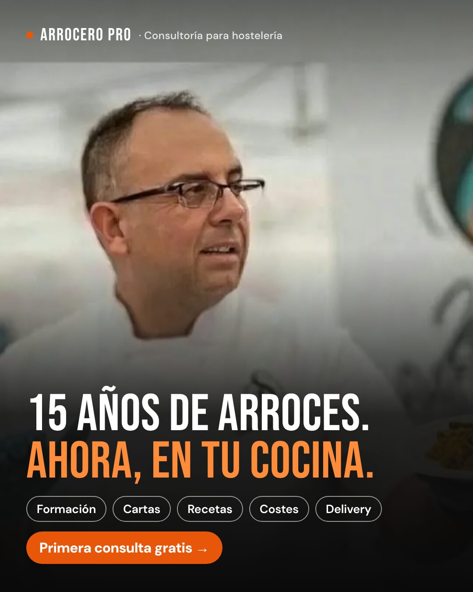
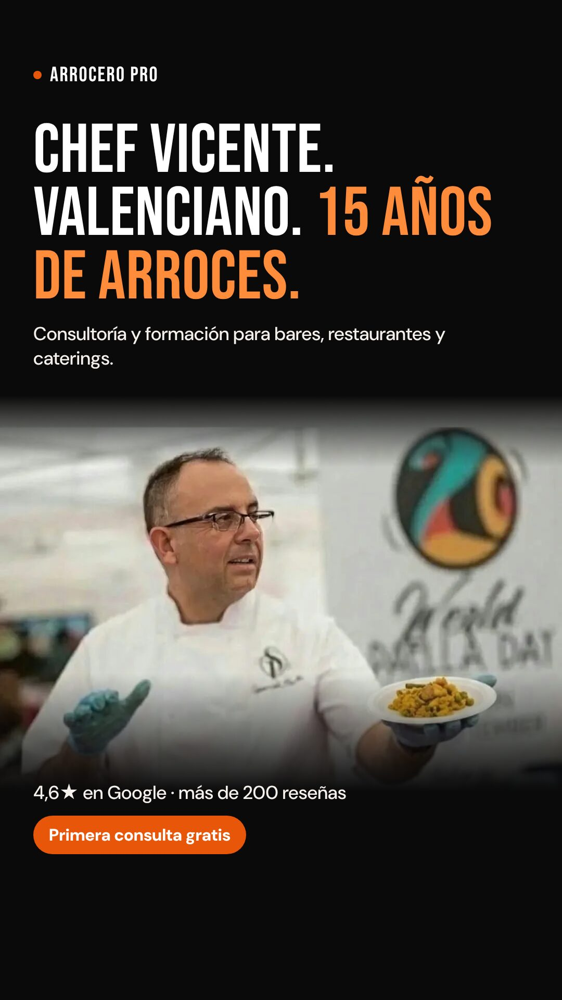
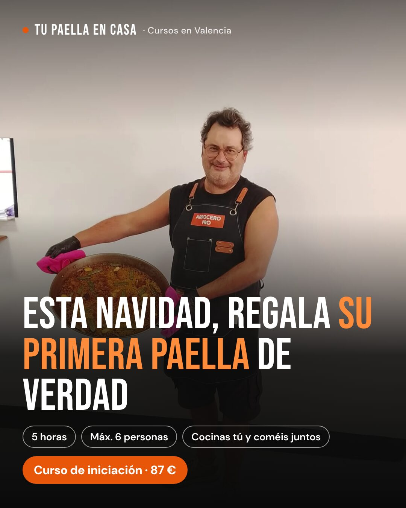
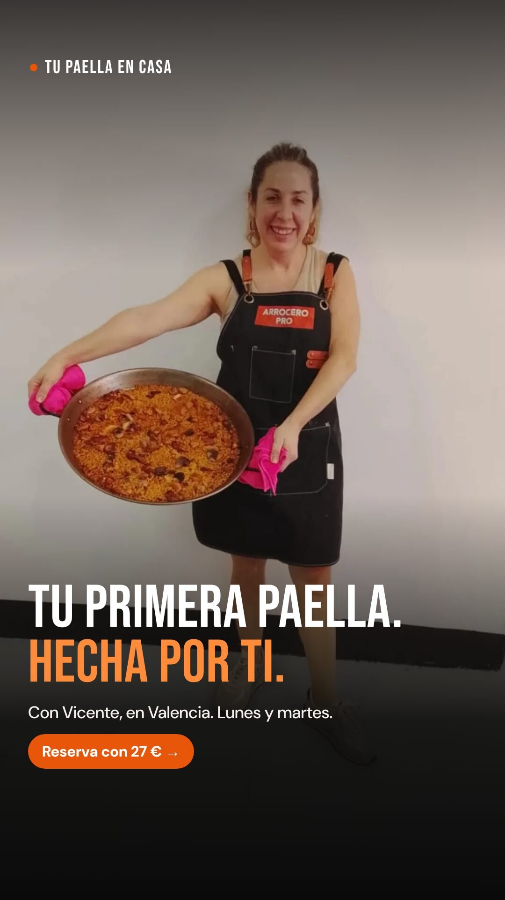

Anuncios: tres mensajes para restaurantes y dos para particulares
El público principal es la hostelería (consultoría y cursos HORECA y FULL): tres ideas distintas, cada una con versión para el feed (4:5) y para historias y reels (9:16), para ver cuál trae dueños de restaurante de verdad. Para particulares hay dos piezas (curso de iniciación y regalo de Navidad) para llenar plazas libres. Las fotos son las de tu web.
«Que el arroz no dependa de quién esté en el fuego». La pregunta: ¿el problema de la regularidad (cocineros que rotan) hace que el dueño se pare a mirar?
«¿Sabes cuánto te deja cada ración de paella?», con un escandallo en blanco. La pregunta: ¿el dinero trae consultas más serias que la cocina?
«15 años de arroces. Ahora, en tu cocina». La pregunta: ¿el dueño compra antes a la persona y su oficio que al problema?
Hostelería · recorrido principal
Llevan a la página de Arrocero Pro para hostelería (ver la maqueta). El botón es «Más información» y el objetivo de la campaña es que se complete el formulario con las cuatro preguntas.


A · El fuego
HosteleríaTexto principal
¿Tu paella sale igual un martes que un sábado a tope? Si depende de quién esté en el fuego, no es una receta: es una lotería. Vicente, chef arrocero valenciano con 15 años entre paelleras, entra en tu cocina: ✓ Fichas técnicas y tiempos para cada arroz ✓ Formación práctica para tu equipo ✓ Carta de arroces y escandallos Para bares, restaurantes, comida para llevar y caterings. La primera consulta es gratis.
A quién va: dueños y jefes de cocina de bares, restaurantes, comida para llevar y caterings. Comunidad Valenciana (o el radio en el que trabajes, a confirmar), de 25 a 60 años, con intereses de hostelería y restauración o público abierto.


B · Los números
HosteleríaTexto principal
¿Sabes cuánto te deja cada ración de paella? Si el precio de carta sale de mirar a la competencia y el coste se calcula «a ojo», es difícil saberlo. Vicente te ayuda a hacer números: ✓ Escandallo al gramo de cada arroz ✓ Un precio de carta que cuadra con tu coste ✓ Arroces para llevar y menús que suben el ticket Primera consulta gratis, por videollamada o en tu local.
A quién va: el mismo público que A. Es el que mejor encaja con el curso Arrocero Pro HORECA (escandallo, producción y ticket medio) si el dueño no está para una consultoría.


C · Vicente
HosteleríaTexto principal
15 años de arroces. Ahora, en tu cocina. Soy Vicente, chef arrocero valenciano. Después de cocinar para más de 2.000 clientes, ayudo a bares, restaurantes y caterings con sus arroces: · Formación para tu equipo · Cartas y recetas con ficha técnica · Escandallos y costes · Arroces para llevar, delivery y catering 4,6★ en Google con más de 200 reseñas. La primera consulta es gratis.
A quién va: el mismo público que A y B. Si gana C, el siguiente paso es un vídeo de 15-20 s de Vicente en una cocina de cliente.
Particulares · recorrido secundario
Solo para llenar plazas libres de los lunes y martes, y con más peso en noviembre y diciembre (regalos). Llevan a la sección de cursos de arroceropro.com, con reserva de 27 € por Bizum.

D · El regalo
ParticularesTexto principal
¿Buscas un regalo que no acabe en un cajón? Un día cocinando paella valenciana con Vicente, chef arrocero, en Valencia: · 5 horas, 100 % práctico · Máximo 6 personas · Cocina su propia paella, con su socarrat, y luego coméis todos juntos Curso de Iniciación: 87 €. Lunes y martes.
A quién va: Valencia y 40 km alrededor, de 25 a 60 años, abierto. Del 1 de noviembre al 20 de diciembre. A confirmar: si vendes tarjeta regalo o bono con fecha abierta. Sin eso, este anuncio no se publica.

E · Tu primera paella
ParticularesTexto principal
Tu primera paella. Hecha por ti. Con Vicente, chef arrocero valenciano, en grupos de 6 como máximo. Fuego, caldo, el punto del arroz y el socarrat. Cocinas tú y luego comemos juntos. Iniciación: 87 €, 5 horas. Reserva tu plaza con 27 € por Bizum.
A quién va: Valencia y 40 km alrededor, de 25 a 60 años, y quien ha visitado arroceropro.com en los últimos 30 días y no ha reservado. Solo cuando haya plazas libres en las dos semanas siguientes.
Plan de prueba
| Qué | Versión proporcionada | Versión completa |
|---|---|---|
| Presupuesto al día | Hostelería: 7 €/día (A, B y C dentro de la misma campaña). Particulares: 3 €/día, solo en noviembre y diciembre. Unos 210-300 € al mes. | Hostelería: 10-12 €/día. Particulares: 3-5 €/día. Recuerdo a quien visitó la web y no escribió: 2 €/día. Google para búsquedas profesionales («curso arrocero profesional», «formación paella hostelería», «asesor de arroces para restaurante»): 3-5 €/día. Unos 450-600 € al mes. |
| Cómo | La misma página, el mismo público y las mismas preguntas para A, B y C. Solo cambia el mensaje, para que la comparación sea limpia. | |
| Primeras 2 semanas | Miramos qué mensaje hace que se paren (cuántos lo ven 3 segundos y cuántos hacen clic) y cuál lleva del clic al formulario. No se apaga nada antes de 1.500-2.000 impresiones por anuncio o 7 días. | |
| Qué gana | No el formulario más barato, sino el coste por consulta gratis celebrada con un negocio de hostelería (y después, por curso HORECA, FULL o consultoría vendida). En particulares, el coste por plaza pagada con Bizum. Un anuncio más caro por formulario puede ganar si trae más consultas reales. | |
| Cuándo se corta | A las 2 semanas, el anuncio que cueste el doble por consulta que el mejor se apaga. Si a las 3 semanas la campaña de hostelería no ha traído ninguna consulta celebrada, paramos y revisamos el mensaje y la página antes de gastar más. Particulares: si no hay plazas libres, se pausa. | |
| Después | El mensaje que gane se queda y se le hacen 3 ganchos nuevos sobre la misma idea. El que pierda se sustituye. Un vídeo de 15-20 s de Vicente en una cocina se prueba contra el mejor estático. | |
Horquilla orientativa, a confirmar en las 3 primeras semanas: con 7 €/día en hostelería esperaríamos entre 4 y 12 contactos de negocios al mes, y una parte de ellos acabaría en consulta. Es un público pequeño y caro de alcanzar, y por eso lo que más pesa al principio es contestar al minuto y hacer seguimiento, no el presupuesto de anuncios.
Pendiente antes de publicar
- Fotos tuyas en cocinas de clientes (o en tu cocina con cocineros profesionales). La foto que hay ahora en la sección de consultoría parece de otro chef: confírmanoslo y no la usamos.
- Píxel de Meta en arroceropro.com (hoy no lo tiene) para saber qué anuncio trae a quién.
- Si vendes tarjeta regalo de los cursos (sin ella, el anuncio D no sale).
- Hasta dónde te desplazas para una consultoría y si haces la primera consulta por videollamada, para ajustar el público.
- Validar contigo los textos de oficio (escandallo, fichas técnicas, producción para eventos) y la cifra de «más de 2.000 clientes».
- Confirmar contigo que hoy no tienes nada activo (en la Biblioteca de anuncios de Meta no aparece ningún anuncio de Arrocero Pro a 16-oct), para no competir contigo mismo.